在上一篇文章的最后，我们留了一个问题，就是如果仅保留等腰的条件，是否还有比较好的结论？
要解决这个问题，我们先从一种特殊情况谈起．
1. 一种特殊情况
当两个等腰 Rt△ABD 和 △ACF 旋转的时候，一种非常特殊的情况就是两个三角形的斜边共线的情况，如图1：
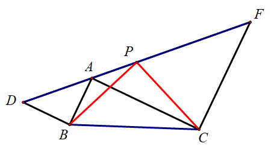
这个时候上面的结论依旧成立，而且我们注意到这个时候 ∠BAC=90∘，因此如果我们取 BC 的中点 Q，则有 QA=21BC=QP，也就是说 △APQ 是一个等腰三角形．
熟悉四点共圆的朋友马上就会想到，这里面 ABCP 四点共圆，圆心恰好就是 Q．
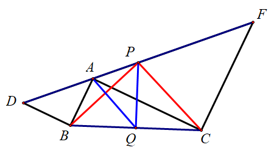
1.1. 逆命题
那我们反过来想一下，如果取 △ABC 的外接圆和 DF 交于 P，那么 P 点是否一定是 DF 的中点？
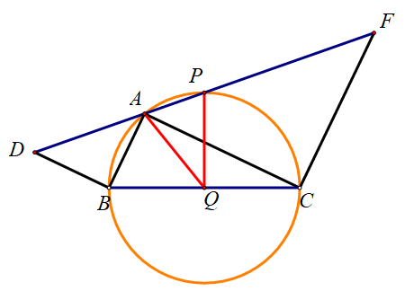
如果考虑同一法的话，很明显这个结论是成立的．
那如果不用同一法呢？
1.2. 构造梯形的中位线
一种方法是构造梯形的中位线．我们分别过 B、C、Q 作 DF 的垂线，垂足依次为 M、N、T，则 CT 是梯形 BMNC 的中位线，且 M、N、T 分别是 AD、AF、AP 的中点，于是
PD=2MT=2NT=2(AN−AT)=AF−AP=PF
因此 P 是 DF 的中点．
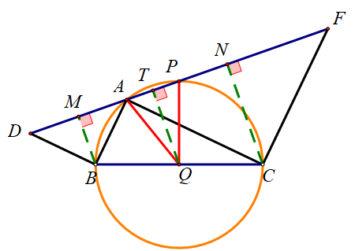
另一种方法是构造旋转相似，这种方法放到我们后面的推广里来讲．
2. 一种推广
如果要保持四点共圆的条件不变，我们可以把条件弱化成什么样子？
注意如果要保持四点共圆的话，我们要保持 ∠BAC=90∘，因此两个等腰三角形的两底角要保持互余，也就是两顶角要保持互补．
因此，我们可以把两个等腰直角三角形的条件改为，两个「顶角互补的等腰三角形」：
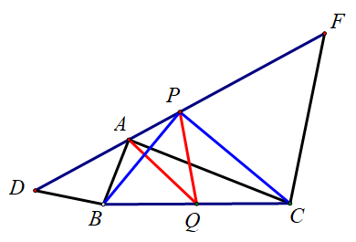
在图5中，AB=BD，AC=CF，∠ABD+∠ACF=180∘，我们分别取 BC、DF 的中点 P、Q，则 ∠BPC=90∘，且 AQ=QP．
我们可以利用上一篇文章中的三种方法，对这种情况进行证明．因为方法几乎是一样的，这里就从略了．
3. 继续推广
我们回顾一下图4的证明，这种方法本质上就是用了三个等腰 △ABD、△ACF、△APQ 的条件，因此我们可以把条件再进行弱化，如下图：
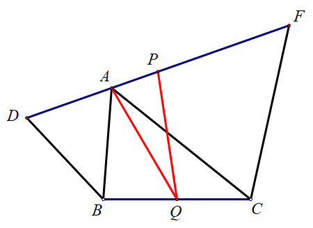
如图6，△ABD 和 △ACF 都是等腰三角形，AB=BD，AC=CF，Q 为 BC 的中点，则
QA=QP⟺PD=PF
我们来想一下，前面的那些方法，是否还成立？
同时，大家可以想一下，这个图形和我们上一篇文章中里的图形有什么区别和联系．
3.1. 倍长中线
这个时候，倍长中线的方法依旧可以使用，不过这个时候，应该要倍长 AQ．
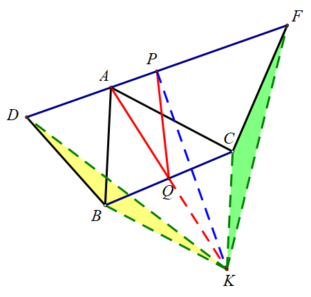
为了两个全等三角形看着大一些，我调整了两个等腰三角形的角度，但这不影响我们的证明
如图7，倍长 AQ 至 K，可以证明 △DBK≅△KCF．
证明这个全等的关键，是要证明 ∠DBK=∠KCF．为了叙述方便，我们设 ∠DBA=2α，∠ACF=2β，则 ∠BAC=α+β，∠ABK=∠ACK=180∘−α−β，于是
∠DBK∠KCF=∠DBA+∠ABK=2α+(180∘−α−β)=180∘+α−β=360∘−∠ACF−∠ACK=360∘−2β−(180∘−α−β)=180∘+α−β
故 ∠DBK=∠KCF．
有了全等之后，我们就有 KD=KF．
如果已知 P 是 DF 的中点，由「三线合一」可知 KP⊥DF，即 △KPA 是直角三角形，KQ 是其斜边中线，于是
PQ=21AK=AQ
如果已知 QA=QP，由 QK=QA=QP 可知 ∠KPA=90∘，再由「三线合一」可知 PD=PF．
3.2. 构造三角形的中位线
这个时候我们没有办法利用中位线直接证明 QA=QP，但是我们可以分别取 AD、AF 的中点 M、N，先证明 QM=QN．
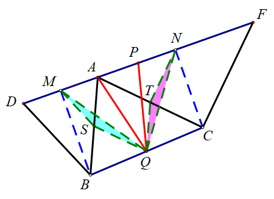
我们分别取 AB、AC 的中点 S、T，于是可以证明 △MSQ≅△QTN．其中 ∠MSQ=∠QTN 的证明和上一个方法类似．
于是接下来，只需要证明 △QAM≅△QPN 即可（或者过 Q 作 AP 的垂线，利用三线合一来做）．
PD=PFQA=QP⟹AM=21AD=21(DF−AF)=PF−NF=PN⟹SAS⟹AAS
3.3. 两种方法的联系
实际上，如果我们把上一种方法的图和这一种方法的图放在一起，就会发现这两组三角形其实是相似的．
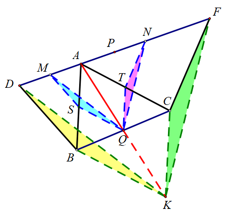
3.4. 构造梯形的中位线
这种方法和图4的证明是一样的，这里就不在重复了．
可以看出，这是最简单的一种证明方法．
3.5. 构造旋转相似
这个图还有一个证明方法，就是构造 A 关于 BC 的对称点 S，如图10，则
∠SBD=2∠SAD=2(180∘−∠SAF)=∠SCF
于是 △SBD∼△SCF，这是一组旋转相似．
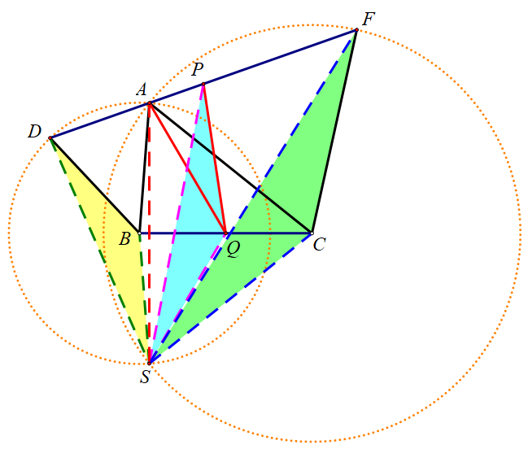
如果已知 P 是 DF 的中点，那么就有 △SBD∼△SQP∼△SCF，因此 AQ=SQ=PQ．
具体的推导过程如下：
⟹⟹⟹△SBD∼△SCF△SBC∼△SDF△SBQ∼△SDP△SBD∼△SQP
如果已知 QA=QP，那么
∠SBD=2∠SAD=2(180∘−∠SAP)=∠SQP
于是 △SBD∼△SPQ．由于 Q 是 BC 中点，所以 P 是 DF 的中点．
具体的推导过程如下：
△SBD∼△SCF⟹△SBC∼△SDF△SBD∼△SQP⟹△SBQ∼△SDP⎭⎪⎪⎪⎪⎪⎬⎪⎪⎪⎪⎪⎫⟹DFBC=SDSB=DPBQ
因此
DFDP=BPBQ=21
即 P 为 DF 的中点．
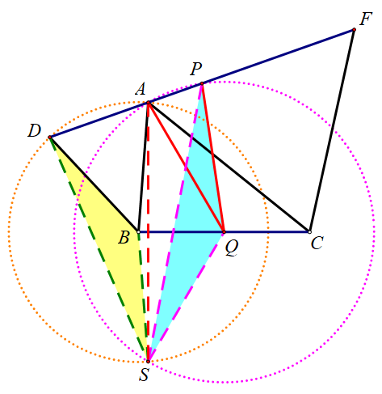
这种方法大量用到了相似和圆周角的性质，由此又可以引申出关于双圆问题的一些结论．有兴趣的朋友可以自行探究一下．
3.6. 和前文图形的关系
我们回过头来看一下图8，注意在这个图中我们平没有用到 D、F 这两个点，因此我们考虑把这两个点去掉，于是这个图就变成了下面这样：
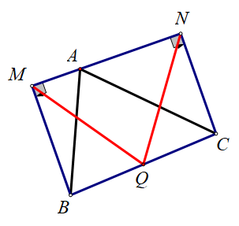
如图12，△AMB 和 △ANC 都是直角三角形，且 M、A、N 共线，取 BC 的中点 Q，则 QM=QN．
对比一下我们前面那篇文章中的图11，那个图的条件实际上两个直角三角形加上 ∠MAB=∠CAN，而图12中则加上 M、A、N 共线，两个条件不同，结论却是相同的．
至此，这个模型的讨论就暂时告一段落．我们在这三篇文章中，系统地讨论了和两个正方形相关的中点问题，以及他们的推广和变形．我们看到，解决这类问题的关键点在于处理好「中点」的条件．我们需要熟练地掌握「倍长中线」和「中位线」的技巧，才能够顺利地解决这些问题．